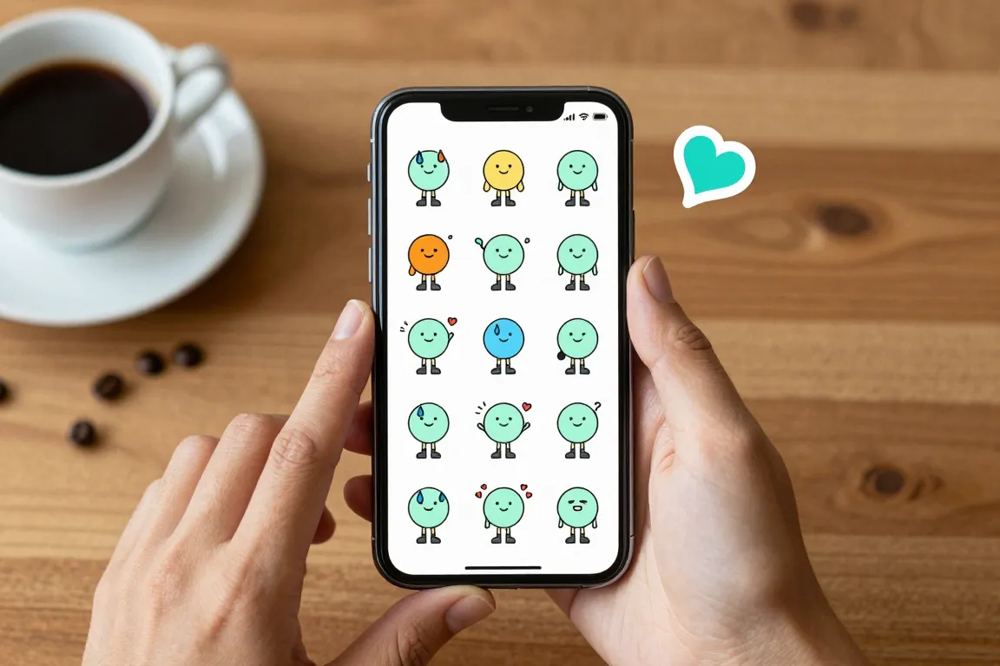

Набор из 8–40 нарисованных персонажей с позой, большим лицом и одним коротким словом, которые отправляют в чат картинкой. Мессенджер LINE сделал эту форму привычной в Азии с 2011 года.

Главная идея
Персонаж с большим лицом говорит то, что не скажет фраза: у чата появляется талисман с голосом.
Принципы дизайна
Рисуйте одного персонажа в наборе из 8, 16, 24 или 40 поз на квадрате не больше 370px на 320px.
Обводите каждую позу белой каймой 6–8px и добавляйте тёмный контур 3px вокруг фигуры.
Давайте персонажу голову в 50% высоты тела, два глаза-точки и рот из 1–3 штрихов.
Добавляйте одно короткое слово из 1–3 слов округлым шрифтом с белой обводкой 4px в углу стикера.
Заливайте формы плоским цветом из палитры в 5–7 оттенков и ограничивайте тени одним тоном.
Наклоняйте фигуру на 2–4° и позволяйте рукам и хвостику реплики выходить за край квадрата.
Показывайте набор сеткой 4 на 2 из миниатюр 96px на бледно-зелёном поле.